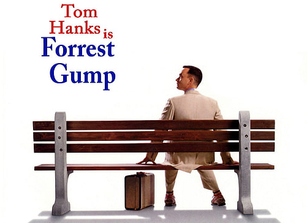

Le Réalisateur
Venez en apprendre plus sur le passé et le génie du réalisateur Robert Zemeckis.
Jeunesse et Formation
Robert Lee Zemeckis est né le 14 mai 1951 à Chicago aux États-Unis. Sa fascination pour le cinéma est présente depuis son enfance. Il grandit au sein d'une famille aimante qui l'a toujours encouragé dans ses rêves artistiques. Dès ses premiers pas dans le monde du cinéma, Zemeckis a montré des signes de génie créatif. Après avoir brillamment obtenu son diplôme d'études secondaires, il décida de poursuivre sa passion pour le cinéma en s'inscrivant à l'Université de l'Illinois.
À l'université, Zemeckis a perfectionné son art en étudiant le cinéma. Il s'est rapidement distingué en réalisant des courts métrages, démontrant un talent prometteur. C'est au cours de ces années à l’université qu'il a solidifié sa compréhension de l’art de la réalisation et a développé une vision unique qui allait définir sa carrière hors du commun.
Un Premier Classique
L'un des moments marquants de la carrière de Zemeckis est sa collaboration emblématique avec le scénariste Bob Gale. Ensemble, ils ont façonné le scénario de “Retour vers le Futur”, un film sorti en 1989 qui allait devenir un classique du cinéma. La trilogie “Retour vers le Futur” a solidifié sa réputation en tant que réalisateur reconnu.
Le succès de “Retour vers le Futur” a permis à Zemeckis d'affirmer son style unique, mêlant habilement humour, science-fiction et récit captivant et profond. La trilogie est devenue une référence dans la pop culture et continue d'inspirer des générations de cinéphiles.
Forrest Gump
Le point culminant de la carrière de Zemeckis est incontestablement la réalisation de “Forrest Gump” en 1994. Le film a reçu six Oscars, dont celui du Meilleur Réalisateur pour Zemeckis. “Forrest Gump” est un chef-d'œuvre acclamé, connu pour sa narration émotionnelle et sa maîtrise magistrale des effets spéciaux qui se fondent parfaitement dans l'histoire.
Zemeckis a réussi à repousser les limites techniques et narratives de l'époque en racontant l'histoire touchante de Forrest Gump. Le film est devenu une référence incontournable dans l'histoire du cinéma, illustrant la capacité de Zemeckis à captiver le public tout en explorant des thèmes profonds.
Héritage
Après la guerre, Forrest revient à la vie civile et retrouve Jenny, mais leurs chemins se séparent. Forrest découvre un talent pour le ping-pong et devient une star dans ce domaine et ira même jouer en Chine. Il utilise sa notoriété pour lancer une entreprise de crevettes pour son ami Bubba mort au combat.
Impact culturel
Robert Zemeckis est un véritable visionnaire du cinéma, dont l'œuvre a redéfini les normes du cinéma. Son génie narratif et son utilisation nouvelle des effets spéciaux ont inspiré des cinéastes du monde entier. Son héritage perdure à travers les générations, incitant les futurs cinéastes à rêver et à repousser les limites du cinéma.